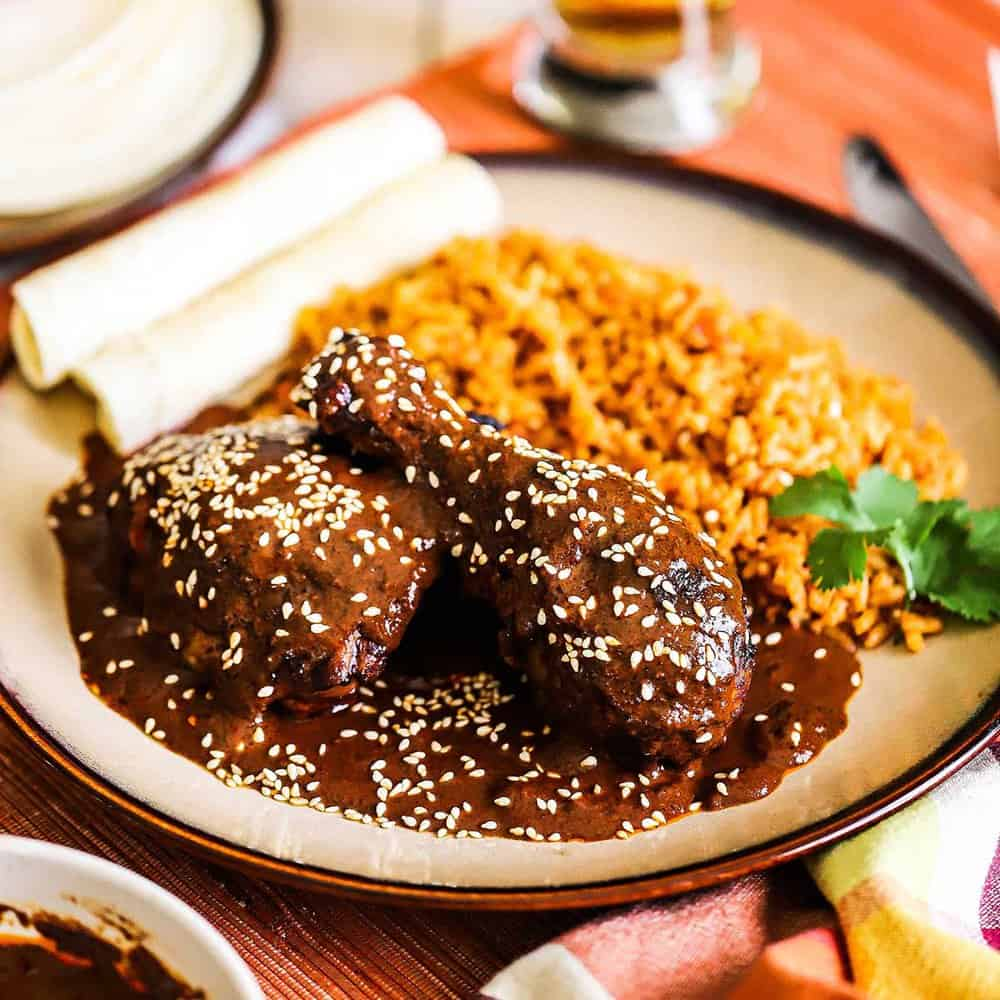

Home
Chicken Mole

Description
Chicken mole is a traditional Mexican dish featuring tender chicken covered in a rich, complex sauce made from a blend of chilies, spices, nuts, and chocolate. The sauce balances savory, sweet, and smoky flavors, creating a unique and flavorful experience.
Ingredients
- Chicken
- Chicken Stock
- Salt
- Dried chilies
- Cumin seeds
- Coriander seeds
- Cinnamon stick
- Cloves
- Onion
- Garlic
- Tomato
- Chocolate
- Sugar
Steps
- Place chicken pieces in a pot with chicken stock
- Toast dried chilies and soak them in hot water until softened.
- Toast nuts, seeds, spices, and sauté onion, garlic, and tomatoes.
- Blend chilies, sautéed ingredients, nuts, seeds, spices, and broth into a smooth sauce.
- Simmer the sauce with chocolate and sugar until thickened and flavorful.
- Add chicken to the sauce and simmer to absorb flavors.
- Serve chicken mole with rice and tortillas, garnished with sesame seeds.